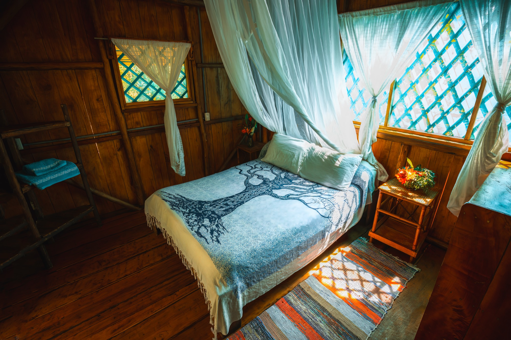
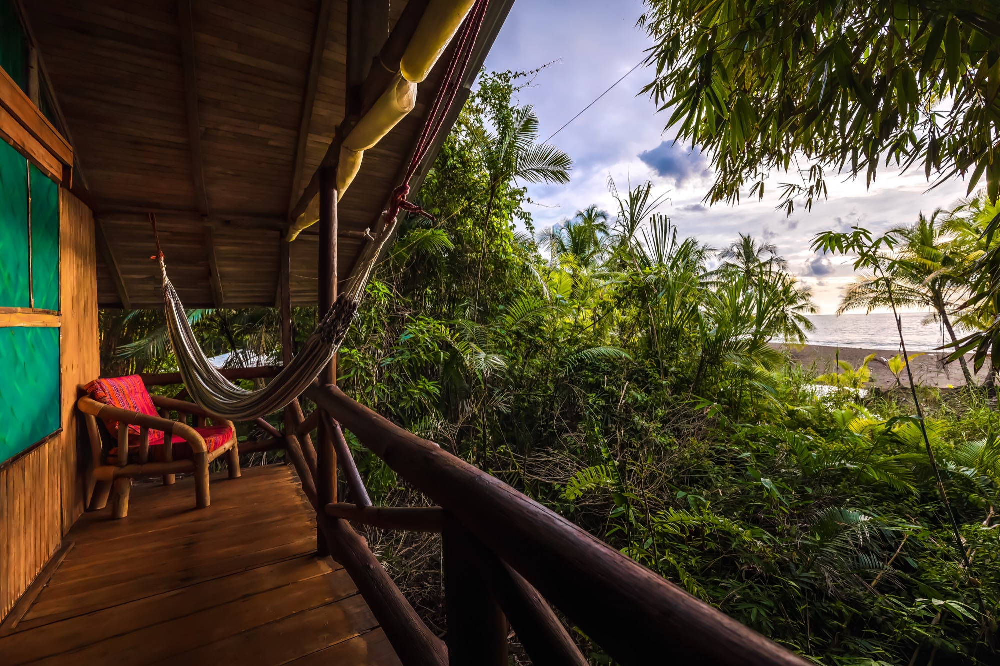
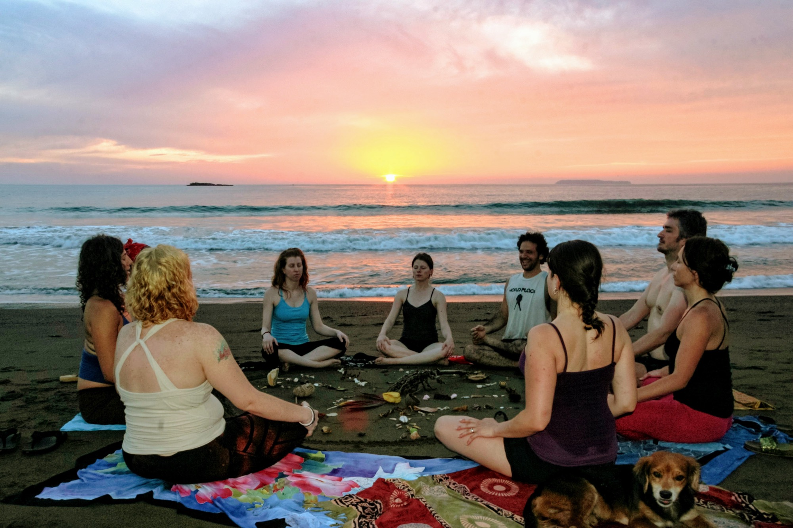
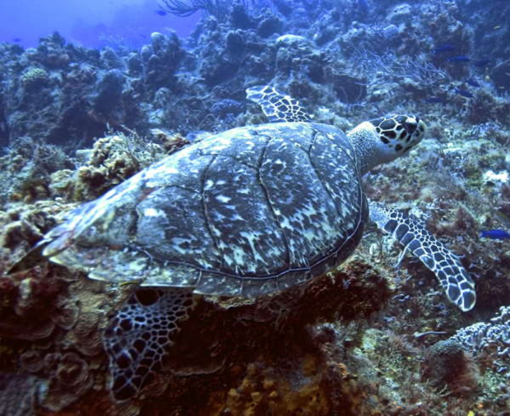

Wellness
The Dharma Hall
A 150-square-metre open-air practice hall on the ground floor of Lapa Lapa, where we host yoga, breathwork, sound, and plant medicine retreats year-round.
Our programsWe are a small wellness ecolodge on a roadless beach in the Osa Peninsula. Ten rooms, one mile of sand, and the quiet that only comes when there is no other way to arrive but by boat.
We built this place slowly, the way the forest builds itself. A cabin first, then a path, then a garden, then a kitchen, then — over many seasons — a small community that learned how to live here without needing very much. You'll find ten rooms scattered into the trees, a three-storey wooden lodge we call Lapa Lapa, and a dharma hall on its ground floor where we gather most mornings. You'll also find us — the people who make breakfast, who walk the turtle patrols, who can tell you which fruit is ripe today.
If you are looking for somewhere to rest, to practise, to remember the shape of your own thinking — we would love to have you. Write to us. We answer every letter ourselves.
A 150-square-metre open-air practice hall on the ground floor of Lapa Lapa, where we host yoga, breathwork, sound, and plant medicine retreats year-round.
Our programs
Hand-built cabins and bungalows for thirty guests, with three garden meals a day, hammocks on every veranda, and the surf ten paces away.
See the lodge
Sixteen years of marine turtle patrols. A 15-acre ethnobotanical garden. A lodge that is off-grid by design and run mostly by neighbours.
Our storySan Josecito Beach runs in a long honey-coloured curve between two headlands of primary rainforest. There are no other lodges, no roads, no electricity past ours. You arrive by a small boat from Sierpe — a slow, hour-and-a-half journey through Central America's largest mangrove forest, past monkeys, caimans, and birds you'll start naming by the end of the week.
The Pacific is warm, the surf is gentle most days, and we keep kayaks and snorkel gear at the lodge for whenever the mood takes you.


The Dharma Hall opens onto the garden. We host our own seasonal retreats here — yoga, breathwork, plant medicine, ethnobotany — and welcome a small number of visiting teachers each year for full-property retreats up to thirty guests.
Whether you come for a programme or simply to be still, the lodge gives you the conditions: warm climate, real food, a forest that does most of the work for you.
Explore wellness




It is the rarest thing — a place that has actually become more wild because people came to live in it. The garden gives, the forest receives, and somewhere between the two you remember how it is supposed to feel to be alive.— A guest, recent stay